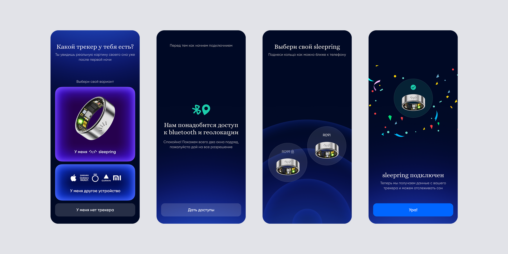
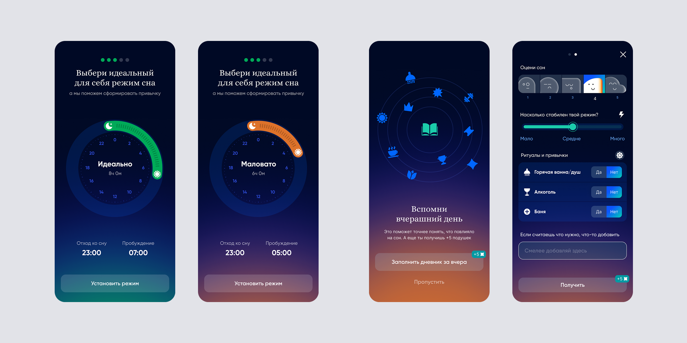

sleeptery
Мобильное приложение для отслеживания сна и умного кольца
Роль
Продуктовый дизайнер
Что за продукт
Sleeptery — приложение, которое помогает отслеживать сон с помощью умного кольца или другого трекера, формировать режим и замечать привычки, влияющие на восстановление.
Задача
Клиент пришёл с идеей продукта и первыми набросками в Miro — без готового интерфейса и чёткого понимания, как приложение должно работать. Нужно было превратить эту идею в понятный пользовательский путь: от первого запуска и подключения трекера до настройки режима и регулярного анализа сна.
Что я делал
Начал проект с вайрфреймов: вместе с клиентом проверяли гипотезы, раскладывали логику и расположение элементов, не отвлекаясь на визуальный стиль. За несколько итераций сформировали структуру приложения и ключевые сценарии.
Затем спроектировал и задизайнил мобильное приложение с нуля: онбординг, подключение умного кольца и сторонних трекеров, настройку режима сна, дневник привычек и оценку сна. Брендбук — логотип и базовые цвета — был создан другим дизайнером; я адаптировал его для цифрового продукта и развил в полноценную интерфейсную систему.
Помимо приложения, делал сопутствующие носители: сайты, материалы для социальных сетей и полиграфии, визуальные коммуникации, дизайн первой упаковки для кольца и рекламные анимированные экраны для города.
Результат
Из первоначальной идеи и схем в Miro получился целостный продукт: понятный путь подключения трекера, персональная настройка режима и инструменты, которые помогают связывать качество сна с повседневными привычками.

